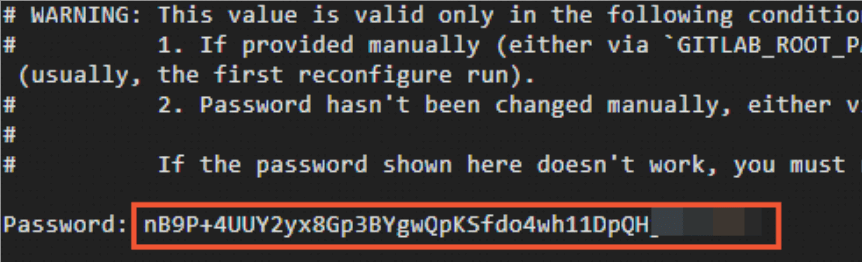
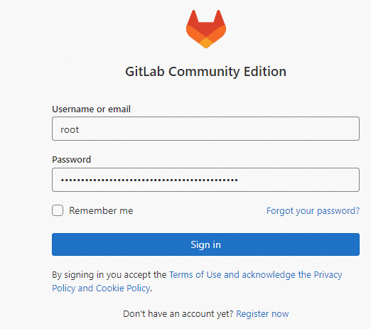
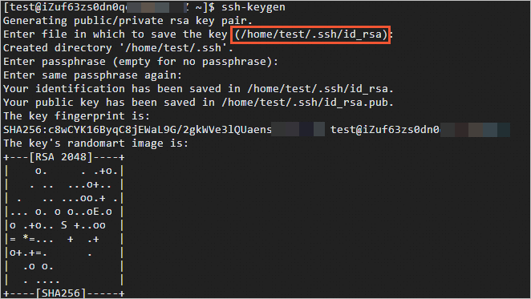
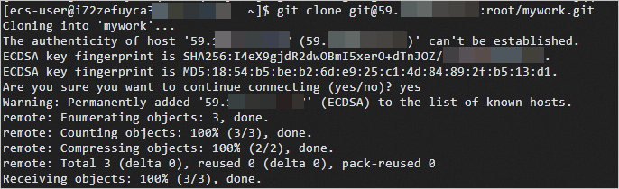
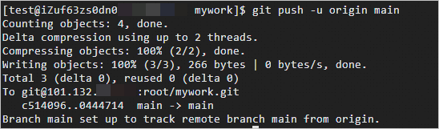

Gitサーバーの構築
前の章ではリモートリポジトリに Github を使用しました。Github の公開プロジェクトは無料で、2019 年から Github のプライベートリポジトリも無制限に使用できるようになりました。
もちろん、自分で Git サーバーを構築してプライベートリポジトリとして使用することもできます。
ベアリポジトリ（Bare Repository）を使用する
1、安装Git
Ubuntu サーバーに Git をインストール：
sudo apt install git
使用しているシステムが Centos/RedHat の場合、インストールコマンドは次のとおりです：
yum -y install git-core
Fedora のインストールコマンド：
# yum install git (Fedora 21 及之前的版本) # dnf install git (Fedora 22 及更高新版本)
次に、git サービスを実行するための git ユーザーグループとユーザーを作成します：
$ groupadd git $ useradd git -g git
2、ベアリポジトリの作成
Git ユーザーにログインし、そのホームディレクトリにベアリポジトリを作成します。
$ sudo su - gitまず、Git リポジトリとして使用するディレクトリを選択します。/home/gitrepo/runoob.git と仮定し、/home/gitrepo ディレクトリで次のコマンドを入力します：
$ cd /home $ mkdir gitrepo $ chown git:git gitrepo/ $ cd gitrepo $ git init --bare runoob.git
上記のコマンドで Git は空のリポジトリを作成します。サーバー上の Git リポジトリは通常、末尾が.gitで終わります。次に、リポジトリの所有者を git ユーザーに変更します（root など他のユーザーで操作した場合）：
$ chown -R git:git runoob.git
3、証明書ログインの作成
公開鍵を ~/.ssh/authorized_keys に追加して、リモートアクセスを許可します。
ログインが必要なすべてのユーザーの公開鍵を収集します。公開鍵は id_rsa.pub ファイルにあります。公開鍵を /home/git/.ssh/authorized_keys ファイルにインポートします。1 行に 1 つずつ記載します。
そのファイルがない場合は作成します：
$ cd /home/git/ $ mkdir .ssh $ chmod 755 .ssh $ touch .ssh/authorized_keys $ chmod 644 .ssh/authorized_keys # 在文件中添加你的 SSH 公钥
4、リポジトリのクローン
$ git clone git@192.168.45.4:/home/gitrepo/runoob.git Cloning into 'runoob'... warning: You appear to have cloned an empty repository. Checking connectivity... done.
192.168.45.4 は Git が配置されているサーバーの IP です。ご自身の Git サービスの IP に変更する必要があります。
これで Git サーバーのインストールが完了です。
使用 GitLab
GitLab は強力な Git サービス管理ツールであり、中規模から大規模のチームに適しています。豊富なユーザー管理、CI/CD、コードレビューなどの機能を提供します。
1、GitLab をインストール
に従ってGitLab 公式ドキュメントGitLab をインストールします。
例えば、Ubuntu の場合：
# sudo apt-get update # sudo apt-get install -y curl openssh-server ca-certificates tzdata perl # curl https://packages.gitlab.com/install/repositories/gitlab/gitlab-ee/script.deb.sh | sudo bash # sudo EXTERNAL_URL="http://yourdomain" apt-get install gitlab-ee
EXTERNAL_URL="http://yourdomain" には自分のドメインまたはパブリック IP を設定します。例：
sudo EXTERNAL_URL=101.132.XX.XX yum install -y gitlab-ee
2、GitLab を設定
インストール完了後、ブラウザで http://yourdomain にアクセスし、管理者アカウントを設定します。
以下のようなエコー情報が表示されたら、GitLab が正常にインストールされたことを示します。

GitLab にログインし、新しいプロジェクトを作成します。ユーザー名はroot。
ログインパスワードを取得：
sudo cat /etc/gitlab/initial_root_password
結果は次のとおりです：

初回ログインではユーザー名root:

4、鍵ペアファイルを生成し公開鍵を取得
Git ツールをインストールします（インストール済みの場合はスキップ）：
sudo apt-get install git
鍵ペアファイル id_rsa を生成：
ssh-keygen
鍵ペアの生成中に、システムは鍵ペアの保存ディレクトリ（デフォルトは現在のユーザーディレクトリの .ssh/id_rsa、例：/home/test/.ssh/id_rsa）と鍵ペアのパスワードの入力を求めます。手動で入力することも、Enter キーを押してデフォルトを維持することもできます。
生成後、次のような情報が表示されます：

公開鍵ファイル id_rsa.pub の内容を表示してコピーします：
cat .ssh/id_rsa.pub
次のような情報が表示されます：
ssh-rsa AAAAB3NzaC1yc2EAAAADAQABAAABAQDQVwWjF3KXmI549jDI0fuCgl+syJjjn55iMUDRRiCd/B+9TwUda3l9WXH5i7RU53QGRCsDVFZxixLOlmXr9E3VSqkf8xXBnHs/5E2z5PIOCN0nxfB9xeA1db/QxPwK4gkHisep+eNHRn9x+DpCYDoSoYQN0nBg+H3uqfOqL42mJ+tqSfkyqbhjBf1kjtDTlBfVCWtI0siu7owm+c65+8KNyPlj5/0AyJ4Aqk1OX2jv+YE4nTipucn7rHwWuowasPU86l+uBsLNwOSb+H7loJvQyhEINX2FS1KnpRU+ld20t07n+N3ErfX5xBAGfxXpoN9BKKSP+RT7rvTeXTVE**** test@runoob.com****
5、プロジェクトを作成
GitLab のホームページで、Create a project オプションをクリックします：

Create blank project をクリックし、Project name と Project URL を設定して、Create project をクリックします：

この記事では mywork プロジェクトを例として説明します。
6、SSH キーを追加
現在のプロジェクトページで、Add SSH key をクリックします：

公開鍵ファイル id_rsa.pub の内容を Key のテキストボックスに貼り付けます：

Add key をクリックします。SSH キーの追加が完了すると、次の図のようになります：

Clone リンクをコピーします。このリンクはクローン操作を行う際に必要です：

使用GitLab
1、Git リポジトリを使用するユーザー情報（ユーザー名とメールアドレス）を設定します。
git config --global user.name "testname" git config --global user.email "abc@example.com"
2、作成したプロジェクトをローカルにクローンします。
git clone git@101.132.XX.XX:root/mywork.git

3、ファイルを GitLab サーバーにアップロードします：
プロジェクトディレクトリに移動します：
cd mywork/
GitLab にアップロードする必要があるターゲットファイルを作成します：
echo "test" > /home/test/test.sh
ターゲットファイルまたはディレクトリをプロジェクトディレクトリにコピーします：
cp /home/test/test.sh ./
test.sh ファイルをインデックスに追加します：
git add test.sh
test.sh をローカルリポジトリにコミットします：
git commit -m "test.sh"
ファイルを GitLab サーバーに同期します：
git push -u origin main

ウェブページで、アップロードした test.sh ファイルが GitLab サーバーに同期されていることを確認できます：

クリックしてノートを共有
<p style="font-size:14px;">ノートはこの記事の内容の拡張である必要があります！</p><br> <p style="font-size:12px;"><a href="../tougao.html" target="_blank">記事の投稿は、ここをクリックしてください</a></p> <p style="font-size:14px;"><a href="../w3cnote/runoob-user-test-intro.html" target="_blank">登録招待コードの取得方法</a></p> <h3 class="text-muted"><i class="fa fa-info-circle" aria-hidden="true"></i> ノートを共有する前に<a href=";.html" class="runoob-pop">ログイン</a>が必要です！</h3> <p><a href="../w3cnote/runoob-user-test-intro.html" target="_blank">登録招待コードの取得方法</a></p>